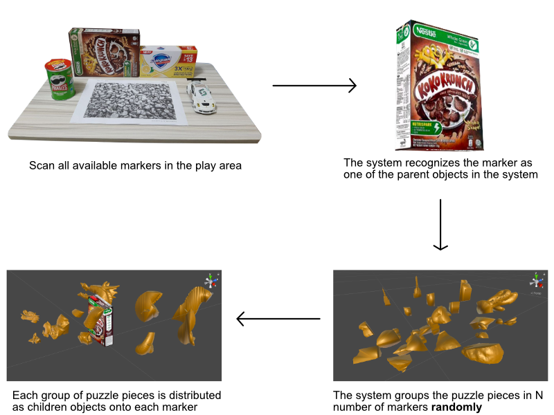
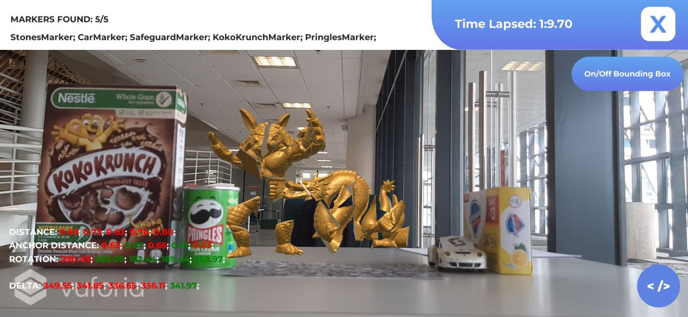

The physical markers used were selected based on common household items, so that it would be easily accessible to the user. In scanning the markers different methods were used, box markers were scanned by taking a picture of the 6 sides and uploaded them to the vuforia database online. Scanning cylindrical objects needs a picture of the whole side. For the car marker it was scanned using Vuforia's mobile scanning application.
Dynamically distributing the puzzle pieces is done once the the player has selected the number of markers to be used. Once selected, the number of pieces are then divided by the selected number and randomly attached to a parent container. These containers are then attached to the scanned markers in the order of which they are scanned.

In determening whether the puzzle is solved, there are 5 conditions that must be met. First is the distance between the Physical marker and the camera, secondly the distance of the marker to the anchor, third the placement of the marker around the anchor, fourth the orientation of marker based on its x y z coordinate, and fifth the height of the camera with respect to the anchor. Once a marker is has satisfied all 5 conditions, it's puzzle pieces in the virtual space will attach to the anchor's puzzle pieces. Once all puzzle pieces from the different markers are attched to the anchor the puzzle will be solved.
The values for these conditions were determined based on how we set up the markers. The markers are set to make sure they are easily visible to the camera to minimize miscalibrations. This is done by making the correct orientation and position of the marker would be the one that is easily detected, such as the side of the marker with the most features. Once we have the markers in position, we take the values from Vuforia's marker detection and set them as the correct values. To make it easier to solve the puzzle and account for some miscalibration, we have added a margin of error where the condition will still complete if it is within this value from the correct one.
